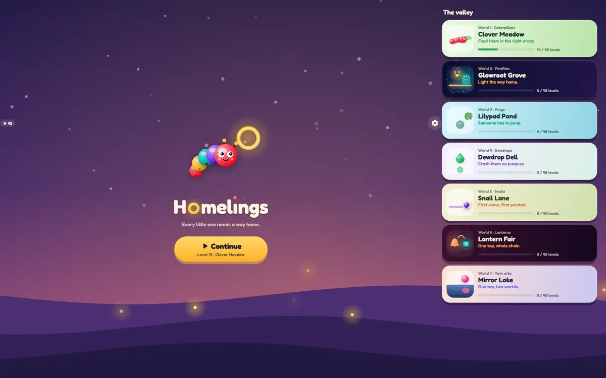
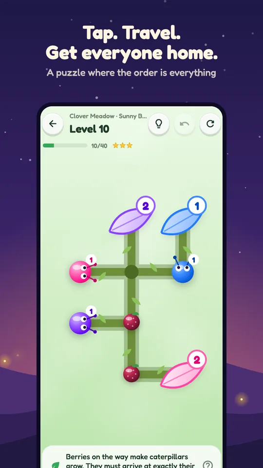

World 1 · Caterpillars
Clover Meadow
Berries on the vine make caterpillars grow by one segment each. Every leaf needs an exact length, so the order decides who eats what.
Homelings is a calm logic puzzle set in a dusk-lit valley. Little critters (caterpillars, fireflies, frogs, dewdrops) all need to get home, and they share the same paths. You never steer them; you only choose who moves next. That single choice is the whole puzzle.

When you tap a critter, it travels along the paths to the farthest free home of its colour. Other critters in the way block it, and so do homes that are already full. Empty homes can be crossed.
Send the wrong one first and somebody ends up sealed in: a dead end. The game tells you why, and you can undo or restart. Find the right order and everybody gets home.
Levels are small and quick: a handful of taps each. The challenge isn't speed or reflexes, it's seeing one step ahead.

Each world keeps the core rule and adds exactly one twist. Every world opens with a short card explaining the new rule, and the ? button shows it again at any time.
Berries on the vine make caterpillars grow by one segment each. Every leaf needs an exact length, so the order decides who eats what.
Fireflies only fly along lit vines. Lamps give light, and so do waiting fireflies and full jars, so the light changes with every move.
A frog whose route crosses open water jumps in and becomes a stepping stone for everyone after it. The puzzle is who should become the bridge, and when.
Dewdrops crash into whatever is on their way and mix colours: red and yellow make orange, red and blue make purple, blue and yellow make green. A wrong mix makes mud.
Worlds 2 to 4 end with remix levels that bring back an earlier rule, two ideas on one board. More worlds will arrive in updates.
Homelings is made for teens and adults (13+) who enjoy logic puzzles in short sessions: on the bus, in a queue, or before bed. It isn't designed for young children.
Looking ahead, spotting what blocks what, and planning a few moves in order. It's a small, satisfying exercise in thinking before acting.
Text scales with your phone settings within limits. Menus and the pieces on the board are labelled for screen readers, and progress and dead ends are announced. Several worlds draw a small symbol on each colour.
Homelings is free to download and play. Ads keep it that way:
A one-time Remove ads purchase turns off the banner and the between-level ads. Optional hint videos stay available.
English, বাংলা (Bangla), हिन्दी (Hindi), اردو (Urdu), Español, Português (Brasil) and Bahasa Indonesia. The game follows your phone's language, and you can pick another in Settings.
PrivacyNo accounts, no sign-up. Your progress stays on your device. The game uses Google services for crash reports, statistics and ads; read the privacy policy for details.
Questions or feedback? Write to support@homelings.io.
Get it on Google Play